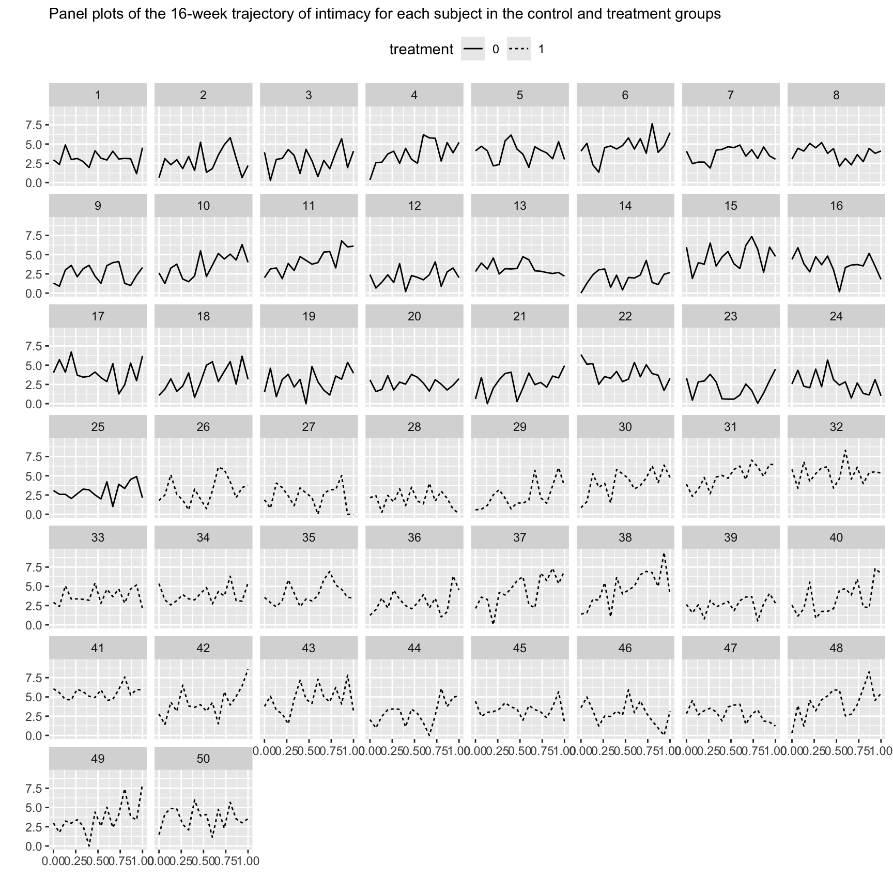
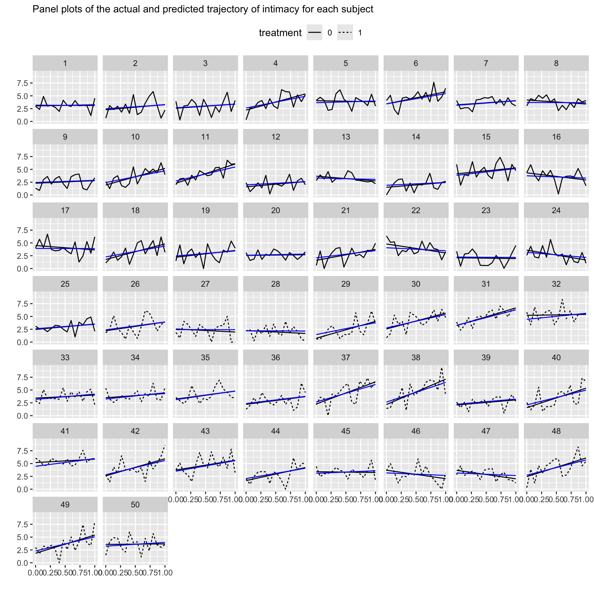
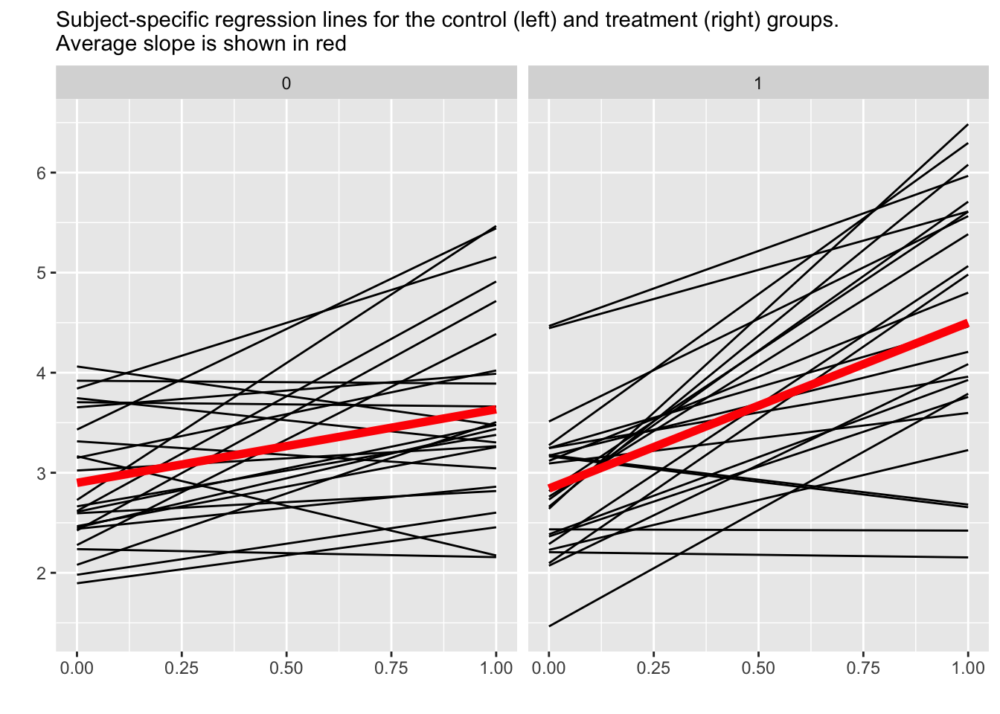

library(tidyverse)## ── Attaching core tidyverse packages ───────────────────────────────────── tidyverse 2.0.0 ──
## ✔ dplyr 1.1.4 ✔ readr 2.1.5
## ✔ forcats 1.0.0 ✔ stringr 1.5.1
## ✔ ggplot2 3.5.1 ✔ tibble 3.2.1
## ✔ lubridate 1.9.4 ✔ tidyr 1.3.1
## ✔ purrr 1.0.4
## ── Conflicts ─────────────────────────────────────────────────────── tidyverse_conflicts() ──
## ✖ dplyr::filter() masks stats::filter()
## ✖ dplyr::lag() masks stats::lag()
## ℹ Use the conflicted package (<http://conflicted.r-lib.org/>) to force all conflicts to become errorslibrary(nlme)##
## Attaching package: 'nlme'
##
## The following object is masked from 'package:dplyr':
##
## collapsetime <- read_csv('time.csv') |>
mutate(treatment = as.factor(treatment),
id = as.factor(id))## Rows: 800 Columns: 5
## ── Column specification ─────────────────────────────────────────────────────────────────────
## Delimiter: ","
## dbl (5): id, time, time01, intimacy, treatment
##
## ℹ Use `spec()` to retrieve the full column specification for this data.
## ℹ Specify the column types or set `show_col_types = FALSE` to quiet this message.# peak at the data
time |>
ggplot(aes(x = time01, y = intimacy)) +
geom_line(aes(linetype = treatment)) +
facet_wrap(~id) +
labs(x = "", y = "", subtitle = "intimacy") +
theme(legend.position = "top")
lgmodel <- lme(
fixed = intimacy ~ time01*treatment,
data = time,
random = ~time01 | id,
correlation = corAR1())
summary(lgmodel)## Linear mixed-effects model fit by REML
## Data: time
## AIC BIC logLik
## 2852.392 2894.508 -1417.196
##
## Random effects:
## Formula: ~time01 | id
## Structure: General positive-definite, Log-Cholesky parametrization
## StdDev Corr
## (Intercept) 0.8281217 (Intr)
## time01 1.3761445 -0.453
## Residual 1.3009531
##
## Correlation Structure: AR(1)
## Formula: ~1 | id
## Parameter estimate(s):
## Phi
## -3.661969e-05
## Fixed effects: intimacy ~ time01 * treatment
## Value Std.Error DF t-value p-value
## (Intercept) 2.8989745 0.2070311 748 14.002601 0.0000
## time01 0.7352012 0.3472019 748 2.117503 0.0345
## treatment1 -0.0564426 0.2927862 48 -0.192777 0.8479
## time01:treatment1 0.9214366 0.4910177 748 1.876585 0.0610
## Correlation:
## (Intr) time01 trtmn1
## time01 -0.599
## treatment1 -0.707 0.423
## time01:treatment1 0.423 -0.707 -0.599
##
## Standardized Within-Group Residuals:
## Min Q1 Med Q3 Max
## -2.62425731 -0.67979207 -0.01899184 0.64336222 2.44625287
##
## Number of Observations: 800
## Number of Groups: 50time$predicted <- fitted(lgmodel)
time |>
mutate(treatment = as.factor(treatment)) |>
ggplot(aes(x = time01)) +
geom_line(aes(y = intimacy, linetype = treatment)) +
# compare to BLUE
geom_smooth(aes(y = intimacy), method = "lm", formula = 'y ~ x', se = F) +
geom_line(aes(y = predicted)) + # BLUP?
facet_wrap(~id) +
labs(x = "", y = "", subtitle = "intimacy") +
theme(legend.position = "top")
time |>
mutate(treatment = as.factor(treatment)) |>
ggplot(aes(x = time01, y = predicted)) +
geom_line(aes(group = id)) + # BLUP?
geom_smooth(aes(group = treatment),
method = "lm", formula = 'y ~ x', se = F,
linewidth = 2, color = "red") +
facet_wrap(~treatment) +
labs(x = "", y = "", subtitle = "intimacy") +
theme(legend.position = "top")
rfx <- ranef(lgmodel) |>
as_tibble(rownames = "id") |>
rename(ebintercept = 2, ebslope = 3)
slopes <- coef(lgmodel) |>
as_tibble(rownames = "id") |>
select(id, slope = time01, interaction = 5) |>
# add treatment indicator:
left_join(
distinct(select(time, id, treatment)) |>
mutate(treatment = as.numeric(treatment == 1)),
by = join_by(id)
) |>
# group-specific slopes:
mutate(slope = slope + treatment*interaction)
coefs.1 <- full_join(slopes, rfx, by = join_by(id)) |>
select(id, treatment, ebintercept, ebslope, slope)
# Find percentiles for slope distribution for each group
coefs.1 |>
group_by(treatment) |>
reframe(
p = fct_inorder(paste0(c(0.0, .05, .25, .50, .75, .95, 1.0)*100, "%")),
qnt = quantile(slope, c(0.0, .05, .25, .50, .75, .95, 1.0))
) |>
spread(p, qnt)| treatment | 0% | 5% | 25% | 50% | 75% | 95% | 100% |
|---|---|---|---|---|---|---|---|
| 0 | -0.9918586 | -0.5573320 | -0.0291769 | 0.6208204 | 1.314164 | 2.293812 | 2.738911 |
| 1 | -0.5076443 | -0.4071146 | 0.9973304 | 1.5424788 | 2.778086 | 3.338567 | 3.844033 |